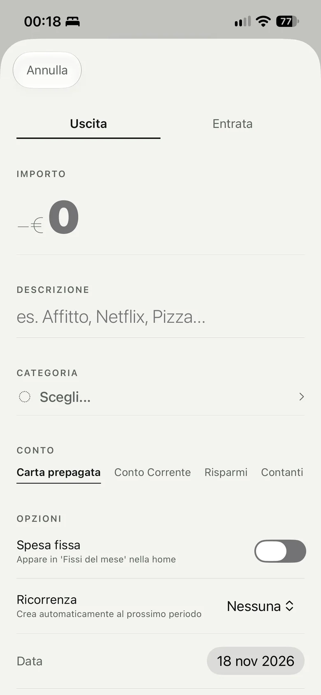

The balance trail
Green for what already happened, dashed amber for what is coming by month end. See at a glance how the month will end.
Coming to iPhone and Android
Bucktrail keeps expenses, income, bills and subscriptions together, and shows you today how the month will end. Simple, fast, no subscription.

Why Bucktrail
Three precise choices, made for people who want to keep track without losing time.
Green for what already happened, dashed amber for what is coming by month end. See at a glance how the month will end.
Expected launch price: €4.99, one time. No monthly subscription, no ads.
Record expenses and income without a connection. Once bank linking is available, you’ll choose which accounts to link.
How it works
An iPhone preview, from the main screens to iOS Shortcuts.
01Home
As soon as you open the app you see your current balance and, below it, the month curve: green for what already happened, dashed amber for the projection to month end.
02Transactions
Expenses, income and transfers, day by day. Upcoming ones sit at the top, so you already know what will leave your account.

03Add
Tap the + button, type a name and an amount, and save. If you used that name before, the category is set for you.

04Recurring
Set an expense or income that repeats and Bucktrail adds it to the coming months as planned. You just confirm it.

05Plan
Put a cap on each category and set money aside for something specific. The app warns you when you get close to the limit and when you go over it.

06Statistics
The month in three numbers, the trend of the last 6 or 12 months and spending by category.

07Accounts
Checking, savings, cards: each with its current and expected balance. You decide which ones count in the total.

08iOS Shortcuts
With the “Add expense” action in the Shortcuts app you log an expense from a widget or with a back tap on your iPhone.

Every feature
Open a screen to see what each button and gesture does.
Hides every amount (balance, accounts, tiles) and shows them as •••• €. Your choice is remembered.
Opens Settings.
Takes you to the Accounts tab.
Chooses which accounts to show on Home and in what order.
Opens and closes. Tap a transaction to edit it. Swipe left to delete it.
Adds a transaction. In Plan it opens the budget and goals editor.
All · Fixed · Transfers · Expenses · Income. “Recurring” opens the series page.
This month, the previous, the next, up to 6 months forward or back.
Shows a single category. Combines with the other filters.
Minimum and maximum amount, custom period. The number on the button tells how many filters are active.
Confirms a planned transaction or puts it back among the planned ones.
Deletes, with confirmation. For a transfer it deletes both sides.
From the amount you move to the name, and Done saves.
Chooses the type of transaction.
Fills itself with the last one used for the same name, or from keywords. You can always change it.
On: the transaction has already happened. Off: it is planned and shows up among the upcoming ones.
Marks expenses that come back every month and counts them in the “Fixed this month” tiles.
Creates the series and the first transaction with a single save.
From one account to another: creates two linked transactions. The button reads “Transfer” or “Plan”.
Change name, amount, notes or date for a single month.
From here on the series changes, past months stay as they were.
Edits the whole series.
That month the transaction is not created.
Closes the series at the point you choose.
Future occurrences appear as “excluded from totals” until they arrive.
A cap in euros per category, on all accounts or on just one.
The amber badge says you are close to the limit.
The red badge says you went over the limit.
Budgets of previous months, to compare.
Alerts when you get close to the limit or go over it.
Name with emoji, target amount, current amount and optional deadline.
Shows the percentage reached.
The arrows change the month shown.
The trend of income and expenses over the last 6 or 12 months.
Percentage and amount of each category in the month.
Creates the month's report to save or share.
Exports transactions to a file you can open in a spreadsheet.
Edits the account.
Deletes the account.
Edit, exclude or include in the total, archive, delete.
Archived accounts sit in a separate section and can be restored.
Type the real balance: the app adds a “balance adjustment” for the difference, without touching your history.
Euro, dollar, pound, yen and others: it changes everywhere in the app.
Follows your iPhone's language, in 7 languages.
A notification on the first day of every month.
A threshold for each account.
Shows or hides the fixed expense and income tiles.
Locks the app when you open it.
An action in the Shortcuts app: enter a name and an amount and the expense is saved without opening Bucktrail.
As a widget on the Home or Lock Screen, or with your iPhone's back tap.
Upcoming features
After launch
Import transactions automatically from supported banks. Choose which accounts to link and keep managing the rest manually.
If you’ve already logged a similar transaction, Bucktrail will ask whether it’s the same one so you can avoid duplicates.
FAQ
If you can't find the answer, write to us.
We plan to launch on the App Store for iPhone and on Google Play for Android. Join the waitlist to hear when it’s out.
Expected launch price: €4.99, one time. No subscription and no ads.
You can manage every account manually. Bank linking is planned for after launch and will be optional for each account.
You can log transactions manually while offline. Syncing across devices and future bank imports require an internet connection.
We plan to launch on both. Sign in to the same Bucktrail account to see your accounts, transactions, budgets and goals once they sync.
Italian, English, Spanish, French, German, Simplified Chinese and Japanese. It follows your phone's language.
Yes: checking, savings, cards. You choose which ones count in the total.
Your data stays on your phone. On iPhone the database is protected by iOS file encryption, with a key tied to your passcode: it is unreadable while the phone is locked. On Android it lives in the app’s private storage, protected by the system’s encryption, and automatic backup is turned off. You can add an app lock with Face ID or Touch ID on iPhone, or fingerprint or face on Android.
An account is optional. If you create one to sync iPhone and Android, your data travels over HTTPS and is stored on Supabase, which encrypts it at rest. Each user can only see their own data, through row-level access rules. The sign-in session is kept in the iOS Keychain or the Android Keystore.
With Advanced Protection, which is optional (Settings → Security), your data is encrypted on your phone with a key only you hold, before it syncs: in the cloud it stays unreadable, even to us. The server only sees technical information, such as your account, how many items you have and when you sync. If you lose both your security phrase and your recovery key, your cloud data can’t be recovered. Without Advanced Protection, sync does not use end-to-end encryption. The app contains no ads and no trackers.
Waitlist
Leave your email. We’ll let you know when Bucktrail launches on iPhone and Android.